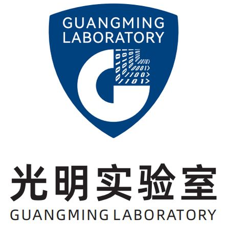
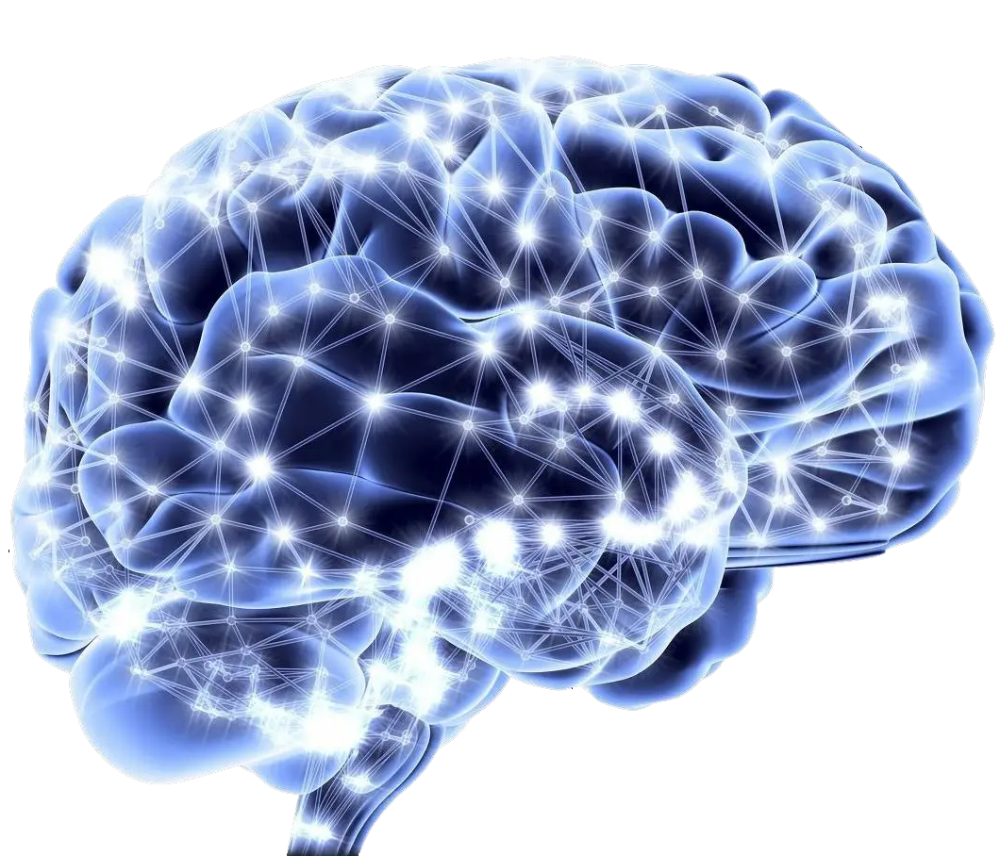
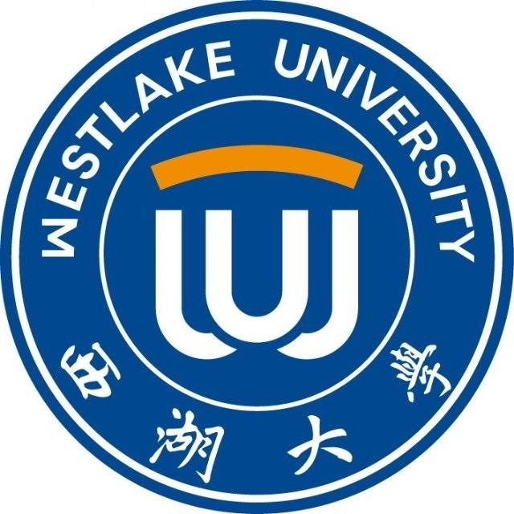

- Built a MIMIC-based benchmark for medical multi-step reasoning, covering clinical decision-making tasks across multiple stages to support more rigorous evaluation and improvement of medical large language models' complex reasoning capabilities.
🎓 Education
University of Georgia (UGA)
Ph.D. Student in Computer Science (School of Computing)
08/2025 (Deferred to 01/2026) - 06/2030
Supervisor: Prof. Tianming Liu
GPA: 4.0/4.0
Harvard University
Visiting Ph.D. Student (Harvard Medical School and Massachusetts General Hospital)
05/2026 - 06/2027
Supervisor: Prof. Xiang Li
Research Area: AI/LLM for Medicine.
Shanghai University (SHU)
B.E. in Artificial Intelligence (School of Computer Engineering and Science)
09/2021 - 06/2025
GPA: 3.81/4.0 (93.60/100)
Ranking: 1/52 (1/31 in class)
Key Courses: Calculus (94), Linear Algebra (100), Object-Oriented Programming (94), Probability and Statistics (95), Data Structures (97), Pattern Recognition (90), Computer Vision (91), Operations and Optimization (88), Data Mining and Knowledge Processing (94), Mathematical Logic (95), Principles and Techniques of LLMs (95), Principles and Algorithms of AI (93)
🔬 Research/Work Experience
 Research Intern at Harvard Medical School and Massachusetts General Hospital
Research Intern at Harvard Medical School and Massachusetts General Hospital
Medical Multimodal Large Language Models
Advisor: Prof. Xiang Li
05/2026 - 05/2027
 Machine Learning Engineer at GyriQAI
Machine Learning Engineer at GyriQAI
Company info: Startup in AI for Education
03/2026 - now
- Developed multi-step agents to conduct marketing research and competitor analysis, leveraging LLMs to automate data collection, analysis, and report generation.
- Conducted marketing outreach and managed official accounts across multiple platforms.
- Used LLMs to reconstruct webpage structures and identify fields available for autofill.

Research Intern at Guangming LaboratoryMedical Large Language Models with Complex Reasoning Capabilities
Lab full name: Guangming Laboratory (Guangdong Artificial Intelligence and Digital Economy Laboratory, Shenzhen)
Advisor: Dr. Wenhao Jiang
Project Undisclosed
09/2025 - 01/2026
- Constructed a high-quality medical Instruction Tuning dataset by performing in-depth cleaning and structuring of large-scale private clinical records, and designing diverse QA templates to ensure comprehensive data coverage.
- Developed a fully automated Supervised Fine-Tuning (SFT) pipeline, streamlining the end-to-end workflow from heterogeneous data loading and dynamic prompt construction to efficient model training.
- Proposed an answer-guided self-distillation mechanism to generate Chain-of-Thought (CoT) reasoning based on correct answers. Incorporating these rationales into SFT guided the model to adopt optimal reasoning paths, significantly enhancing logical reasoning and accuracy in complex medical scenarios.
- Applied Reinforcement Learning for continuous policy optimization, further reinforcing the model's multi-step reasoning abilities and improving the accuracy of clinical decision-making.
AI Intern (NLP Focus) at Huawei
Location: Huawei Lianqiu Lake R&D Center, Shanghai
Department: Ascend Computing Inference Development
12/2024 - 03/2025
- Contributed to the vLLM open-source community by identifying a bug (Issue #11978) and submitting a fix that was merged into the main branch (PR #11979).
- Migrated vLLM to the Ascend NPU platform (vllm-ascend), responsible for unit testing and operator adaptation.
- Adapted speculative decoding on vllm-ascend.

SHU Brain-like Computing CenterAI for Recognizing Preference
Advisor: Prof. Huiran Zhang (Shanghai University)
Project Undisclosed
04/2024 - 09/2024
- Proposed a novel ERP composite formula for analyzing human preferences.
- Achieved effective classification of preferences using AI methods combined with the developed formula.
- Authored a paper as the first author, available on arXiv.

Research Intern at Westlake UniversityRule Discovery in Physical Data/Video
Advisor: Prof. Tailin Wu (Westlake University), Prof. Sebastian Musslick (Brown University)
Project Undisclosed
07/2023 - 06/2024
- Developed a transformer-based model and programmed experiments for symbolic regression tasks.
- Extended symbolic regression from mathematical expressions to the video domain by building a multimodal model.
- Explored the discovery of physical system patterns from videos to empower scientific discovery tasks.
 Research at Shanghai University
Research at Shanghai University
Video Frame Interpolation with PVT
Advisor: Prof. Hang Yu (Shanghai University)
04/2023 - 06/2023
- Proposed a novel encoder-decoder video frame interpolation model leveraging PVT v2 as the encoder and a UNet-like decoder with deconvolution and residual concatenation.
- Achieved an SSIM of 0.9879 on the Vimeo90K Dataset, surpassing state-of-the-art methods.
💻 Projects (Selected by Learning Path)
Fine-Tuning of Multimodal Medical Large Models Integrating RAG Mechanisms
Undergraduate Thesis
05/2025
- Designed and implemented a medical content generation system combining Retrieval-Augmented Generation (RAG) and Multimodal Large Language Model (MLLM) fine-tuning.
- Developed a multimodal RAG framework supporting joint image-text input, featuring multiple retrieval paradigms such as joint embedding, label-guided retrieval, and image-text pair binding.
- Fine-tuned the Qwen2.5-VL model in two stages using Chinese medical QA and image-text datasets, yielding the Qwen2.5-VL-Med model with domain-specific reasoning capabilities.
- Built a modular web-based interactive system supporting local/cloud API deployment, multimodal input, streaming response, and history tracking.
- Proposed and implemented a method to quickly align pre-trained models from different modalities.
- Designed a Siamese neural network similarity module to align pretrained models with varying embedding dimensions.
- Achieved rapid model alignment between text and image modalities with minimal training on a standard image classification dataset, bypassing the need for large "image-description" datasets (e.g., CLIP).
- Experimentally demonstrated the project's ability to align quickly with minimal GPU requirements while maintaining satisfactory performance.
- Reproduced and experimented with the TextCNN model.
- Performed tokenization and encoding of sentence content, followed by padding or truncating sentence lengths.
- Implemented word embedding and utilized multiple convolutional kernels of varying sizes for feature extraction, pooling, and final classification through fully connected layers.
- Developed a network model based on CNN for video frame feature extraction and LSTM for sequential frame feature computation.
- Compared the classification performance of KNN and ANN after freezing the feature extraction model parameters.
- Achieved 92% accuracy on a public dataset, comparable to results from another study using a non-public dataset.
- Independently designed and coded a system utilizing VGG16 for signature feature extraction.
- Achieved 100% accuracy on the CEDAR dataset using Siamese neural networks for classification.
- Developed frontend-backend interaction logic enabling the utilization of training results on web platforms.
🏆 Awards
- ICPC (International Collegiate Programming Contest) Asia Regional Contest (Hefei) Bronze Medal 🥉11/2023
- ICPC (International Collegiate Programming Contest) Asia Regional Contest (Nanjing) Bronze Medal 🥉11/2022
- ASC Student Supercomputer Challenge National Second Prize 🥈02/2024
- Lanqiao Cup C/C++ Programming Contest (National) Third Prize 🥉06/2023
- Lanqiao Cup C/C++ Programming Contest (Shanghai Division) First Prize 🥇04/2023
- CCPC (China Collegiate Programming Contest) Shanghai Programming Contest Silver Medal 🥈10/2022
📚 Papers (First / Co-first Author)
Imaging-Centered Artificial Intelligence for Precision Cancer Immunotherapy: Multimodal Biomarkers, Treatment-Effect Estimation, and Clinical Translation
Paper Link Research Square Preprint. DOI: 10.21203/rs.3.rs-10468208/v1.
- Authors: Shengyang Zhong, Siyuan Li, Wanrong Yang, Zheng Zheng, Zhengliang Liu, Jin Xie, Jin Li, Bin Yi, Lin Zhao, Xiang Li, Wei Liu, Lian Zhang, Tianming Liu, Ning Qiang.
ASTELD: A Six-Axis Classification Framework for Autonomous AI Agents - Design, Evaluation, and an OpenClaw Case Study
Paper Link arXiv Preprint. arXiv:2608.05201.
- Authors: Siyuan Li, Peng Shu, Churan Yu, Peilong Wang, Ruidong Zhang, Bowen Guo, Xinliang Li, Ruiyu Yan, Arif Hassan Zidan, Yi Pan, Wei Ruan, Lifeng Chen, Junhao Chen, Zhaojun Ding, Yiwei Li, Zhengliang Liu, Haixing Dai, Lin Zhao, Yu Bao, Xiang Li, Wei Zhang, Tianming Liu.
The Study of Human Preference Based on Integrated Analysis of N1 and LPP Components
Paper Link arXiv Preprint. arXiv:2505.19879.
- Authors: Siyuan Li, Xiangze Meng, Yijian Yang, Yiwen Xu, Yunfei Wang, Chenghu Qiu, Hanyi Jiang, Pin Wu, Shengbo Chen, Xiao Wei, Hao Wang, Lan Ni, Huiran Zhang.
Research advances in offline handwritten signature verification
Paper Link Applied and Computational Engineering, 6(1), 1244-1252. DOI: 10.54254/2755-2721/6/20230653.
- Authors: Yuhang Guo, Siyuan Li, Jinxuan Wu
🛠️ Skills
- Programming Languages: Python (Advanced), C++ (Proficient), HTML (Proficient), MATLAB (Familiar), CSS (Familiar), JavaScript (Familiar)
- Tools: Git/Github, Microsoft Word, LaTeX (Overleaf), Markdown, VS Code Remote SSH
- AI-related Skills: PyTorch, Transformers, vLLM, AI Agents, LLMs
🤝 Extracurricular & Volunteer Activities
New Media Center, School of Computer Engineering and Science
Chairman
01/2022 - 01/2023
- Managed content publication on the School's official WeChat account and coordinated daily operations.
- Organized and managed recruitment presentations, student representative meetings, and other related affairs.
ByteDance
Campus Ambassador
03/2022 - 06/2022
- Assisted in promoting spring recruitment and summer internships.
- Distributed promotional materials and internal referral codes.
Volunteer Hours: 100h+ ⏳